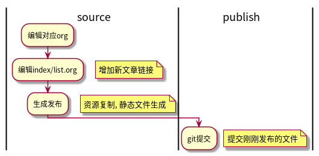

静态页面生成调教
1 2019-05-24 开始使用
今天重新捡起了静态发布.
部署一个Wordpress并不费劲, 但是我想专注于内容. 已经习惯了Emacs中的编辑工作. 因为之前有在Hexo, jekyll, Hugo和org-publish中考察试用过. 当时放弃Hexo的原因主要在于Hexo对org-mode的支持:
- 之前版本的Emacs编辑md文件, 插入代码的编辑会报错, 而我并不想解决这些错误;
- 换用Markdown会得到较好的支持, 但md 文件不能方便的运行片段并获得结果;
目前对生成进行了自定义, 取消了自带样式, 引入了bootstrap, 并定义了一个简单的模板;
2 使用
2.1 目录结构
├── publish 发布目录, 需要提交到github上
│ └── assets
│ ├── css
│ ├── images
│ └── js
└── source org目录
└── assets
├── css
├── images
└── js
2.2 编辑流程

相对而言比较简单, 更重要的是没那么多依赖.
2.3 调整
需要的包: ox-publish, htmlize
配置文件根据参考修改而来, 去掉了默认样式
引入了jquery, bootstrap和自定义css+js文件;
静态文件也是可以分离开的.
部分页面的标题需要加序号, 部分页面的标题需要h标签, 参考 7
3 遗留问题
[ ]锚点链接不正确可能导致发布失败;[ ]因为要检查文件是否被修改, 在数量较多(超过200个)时会导致发布变慢;[ ]资源文件如css, js的修改也需要发布, 稍微麻烦了一些;[ ]块元素如果是代码块, 发布时会询问是否需要执行, 无法自动化;
4 参考
- bootstrapcdn: https://www.bootstrapcdn.com
- bootstrapcdn(国内):https://www.bootcdn.cn
- Org官方文档: https://orgmode.org/worg/org-tutorials/org-publish-html-tutorial.html
- Org官方手册: https://orgmode.org/manual/HTML-Export.html#HTML-Export
- org官方教程: https://orgmode.org/worg/org-web.html
- org-publish发布配置: http://www.i3s.unice.fr/~malapert/org/tips/emacs_orgmode.html
- 发布参数列表: https://orgmode.org/manual/Publishing-options.html
- web展示库: https://revealjs.com